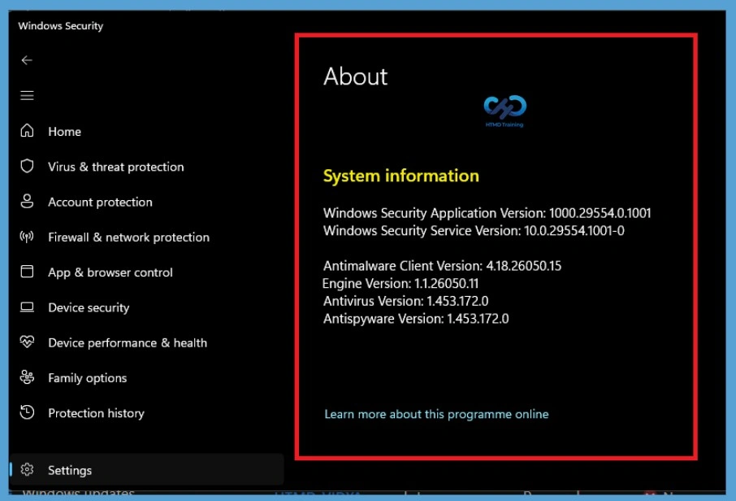
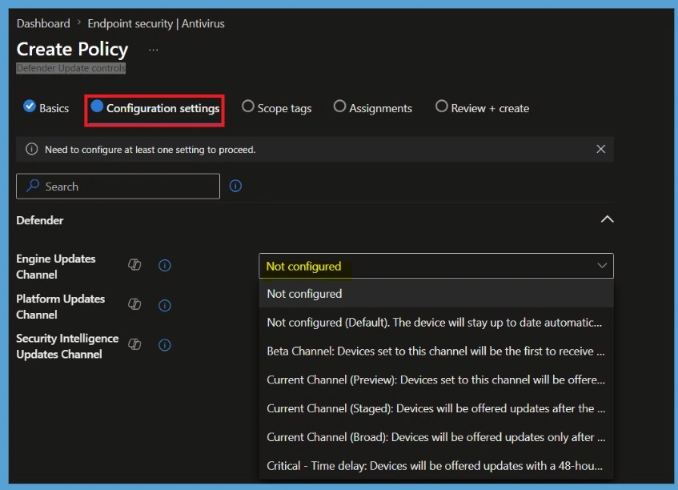

Key Takeaways
- Microsoft Defender for Endpoint EDR updates is moving from monthly Windows security updates to Microsoft Update.
- The rollout started with Windows 10 in late May 2026.
- Windows 11 and other supported Windows versions will receive the change by 2026.
- EDR security improvements can now be delivered in Windows cumulative updates.
In this post, we are discussing how Microsoft Defender for Endpoint EDR Updates Will Be Delivered Through Microsoft Update. Microsoft has introduced a new update model for Microsoft Defender for Endpoint Detection and Response (EDR) security updates. Previously, these updates were included with the monthly Windows security updates. This change enables Microsoft to deliver security improvements more quickly and independently of the Windows update cycle.
Table of Contents
Microsoft Defender for Endpoint EDR Updates are now Separate from Monthly Windows Security Updates for Faster Protection
This change allows Microsoft to release EDR security improvements faster without waiting for the monthly Windows update cycle. It also provides a more flexible way to keep Microsoft Defender for Endpoint protected with the latest security enhancements. The rollout began with Windows 10 in late May 2026 and will gradually expand to Windows 11 and other supported Windows versions by fall 2026.
Organisations using Microsoft Update do not need to take any action, while those using manual update deployment should include the new Defender update package in their regular update process.
What’s changing in this Update
Microsoft Defender endpoint detection and response security updates will no longer be bundled with monthly Windows security updates. Instead, they will be delivered through Microsoft Update using KB5005292 after the required prerequisite updates are installed. This change EDR servicing with other Microsoft Defender components and enables Microsoft to release security improvements more quickly without waiting for monthly Windows updates.
Rollout Schedule:
- Rollout starts with Windows 10 in late May 2026.
- Rollout will expand to Windows 11, followed by the remaining supported Windows versions.
- We expect the rollout for Windows 10 and 11 to be completed by fall 2026.
| Why is Microsoft Making This Change? |
|---|
| Faster delivery of security improvements |
| Reduced dependency on monthly Windows updates |
| Improved flexibility for Microsoft Defender servicing |
| More consistent update experience across Microsoft Defender components |
How the New Microsoft Defender for Endpoint Update Works
EDR security updates will no longer be included with the monthly Windows security updates. Instead, they will be delivered separately through Microsoft Update using KB5005292. To receive these updates, devices must be running Sense version 10.8798.25857.1000 or later and have the required cumulative update (or a later version) installed.
During the first EDR update, Windows installs a new Defender Update Service and creates the %ProgramData%\Microsoft\Microsoft Defender\Defender Update folder. Most EDR updates do not require a restart, but a reboot may be needed in rare cases if an update fails.
If needed, administrators can use the MpCmdRun.exe command-line tool to roll back an EDR update. You can revert to the inbox EDR version stored in %ProgramFiles%\Windows Defender Advanced Threat Protection or restore the previous (N-1) version if a backup is available in %ProgramData%\Microsoft\Windows Defender Advanced Threat Protection\Platform.
Check Microsoft Defender Version Information
Windows Security lists the installed Microsoft Defender versions, including the antimalware client, engine, antivirus, and antispyware. Administrators can use this information to confirm that Microsoft Defender is installed and updated on the device.

Configure Microsoft Defender Update Channels in Intune
Microsoft Intune lets administrators manage Microsoft Defender Antivirus update channels. You can configure the Engine Updates Channel, Platform Updates Channel, and Security Intelligence Updates Channel to control how Defender Antivirus updates are delivered. Microsoft Defender for Endpoint EDR updates is now delivered separately through Microsoft Update under the new update model.
Enable this policy to specify when devices receive Microsoft Defender engine updates during the monthly gradual rollout. Enable this policy to specify when devices receive Microsoft Defender platform updates during the monthly gradual rollout.

Need Further Assistance or Have Technical Questions?
Join the LinkedIn Page and Telegram group to get the step-by-step guides and news updates. Join our Meetup Page to participate in User group meetings. Also, Join the WhatsApp Community and WhatsApp Channel to get the latest news on Microsoft Technologies. We are there on Reddit as well.
Author
Anoop C Nair has been Microsoft MVP for 10 consecutive years from 2015 onwards. He is a Workplace Solution Architect with more than 22+ years of experience in Workplace technologies. He is a Blogger, Speaker, and Local User Group Community leader. His primary focus is on Device Management technologies like SCCM and Intune. He writes about technologies like Intune, SCCM, Windows, Cloud PC, Windows, Entra, Microsoft Security, Career, etc.